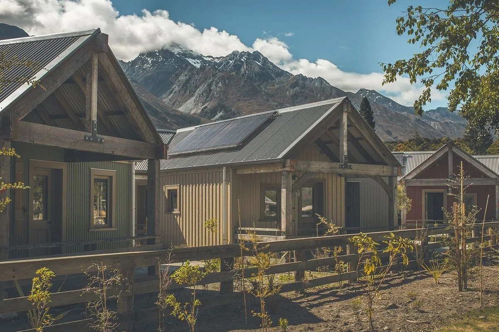
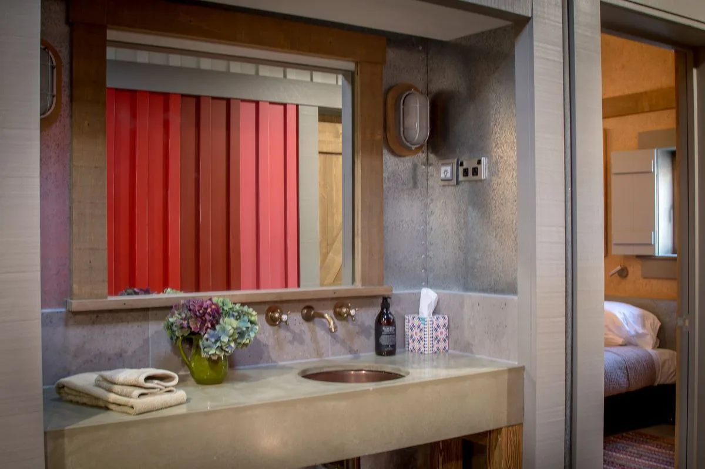
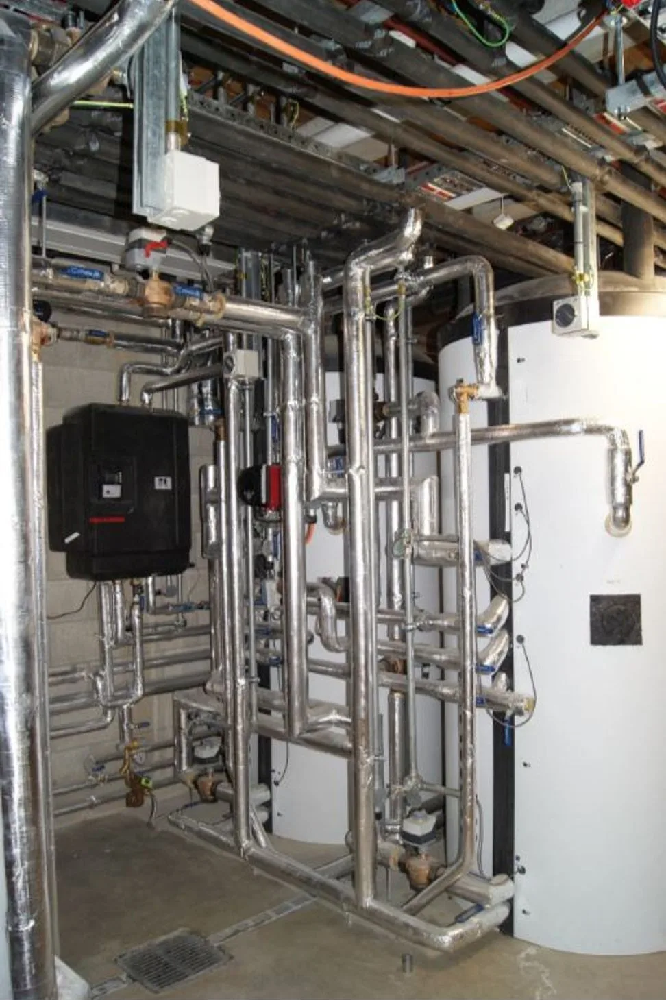
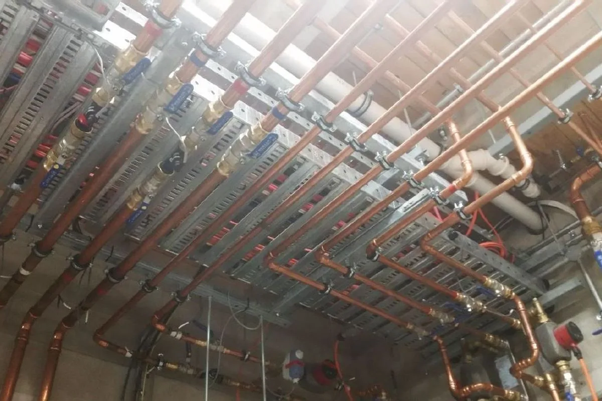

Solar thermal
Roof-mounted collectors harvest solar energy to reduce the demand associated with water heating.

Eco retreat · Glenorchy
Integrated renewable heating, water and drainage services for a visitor retreat built to demonstrate better environmental performance.
Project of the Year · Master Plumbers 2018The brief
Camp Glenorchy was conceived as a practical demonstration of resource-efficient accommodation—comfortable for guests while reducing demand on energy and water.
Optum's work brought heating, solar collection, plumbing and drainage into one coordinated services package. The system needed to perform in an alpine climate while staying true to the project's environmental intent.
A coordinated approach made the renewable systems part of the building rather than an addition to it.
Roof-mounted collectors harvest solar energy to reduce the demand associated with water heating.
Ground-source technology provides an efficient foundation for space heating in Glenorchy's demanding climate.
Low-temperature underfloor heating delivers even warmth without interrupting the architecture or guest experience.
Complete plumbing and drainage services were coordinated across the retreat as part of the wider sustainability strategy.
Inside the project
Finished spaces above; coordinated renewable services underneath.




Imagery sourced from Optum's ArchiPro project portfolio.
The outcome
A landmark project where environmental ambition became working infrastructure.
The completed services support Camp Glenorchy's goal of offering comfort with lower resource demand. The project was recognised as Project of the Year at the 2018 Master Plumbers Awards.
Master Plumbers Awards · 2018Let's begin
Talk to Optum early and heating, water and energy can be considered as one system.
Free consultation